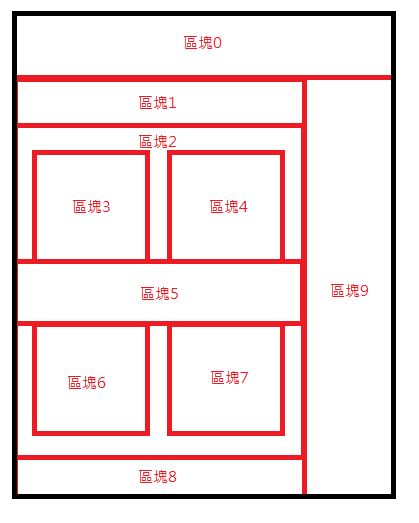

前言
CSS是控制呈現在網頁中元素的技術，好比HTML是骨架，而css就是皮膚，而透過css的樣式調整可以將網頁呈現的畫面任意改變，以下圖示為例，利用css將區塊拼湊成一個網頁，用以呈現給使用者。
CSS與UI/UX息息相關，在網頁中如何不使用文字透過css呈現樣式也可以讓使用者了解含意是一條每位網頁設計師必修之路。
CSS使用說明
在網頁中有許多種方式可以對元素進行樣式設定，在開始css前建議先安裝Live Server使用Live Server開發時儲存檔案會自動重新載入畫面可以省下手動重新整理的時間，以下舉出最常見的三種設定style方式
- <h4 style="color: blue; font-size:30px">我是第一段測試文字</h4>
<style> .test_text01{ color: yellowgreen; font-size:30px; } </style>
後，在任意位置輸入<p class="test_text01">我是第二段測試文字</p><script> let test_text02 = document.getElementById('test_text02') test_text02.style.fontSize = '30px' test_text02.style.color = 'cyan' </script>
後在前面的任意位置輸入<p id="test_text02">我是第三段測試文字</p>
網頁中會呈現
我是第一段測試文字
在網頁中任意位置(建議在head標籤內寫入)網頁中會呈現
我是第二段測試文字
在網頁的底部(</body>)前寫入網頁中會呈現
我是第三段測試文字
以上是常見設定style樣式的方式，每個方法都有不同的使用時機，設定網站頁面的css會採用第二種方式去掉頭尾style標籤後獨立製作檔案，新增資料夾命名為css後放入，其css副檔名必須為.css，在head標籤中使用<link rel="stylesheet" href="css位置">導入樣式。
css在設定中會有權重問題，一般而言css的權重是由以下由小至大做排序，設定重複的樣式會已權重越大為優先覆蓋。
class > id > 標籤內直接輸入style控制 > !important
其中important的權重是最大的，任何在屬性後方加上!important就會蓋過其他地方設置的屬性，因此若非必要盡量避免使用該參數避免後續維護困難。
以下將針對CSS的選取器做一些簡單介紹
- #idName
- .className .className
- .className>.className
- .className + .className
- .className ~ .className
- .className[type="text"]
- .className.className2
- .className.first-of-type
- .className.last-of-type
- .className:first-child
- .className:last-child
- .className:nth-of-type()
- .className:nth-child()
- domName:not(.className)
- .className:hover
- .className:focus
- .className:active
- .className:checked
- .className:before
- .className:after
用途:選取符合id的對象，權重占比非常高若非必要樣式設定建議皆使用class
用途:選取子層所有符合class名稱的元素
用途:用以選取子層一層符合class名稱的元素，又稱子彈選取器
用途:選取符合class名稱後一個class名稱的元素
用途:選取同一層符合class名稱的元素
用途:選取符合class名稱且帶有type="text"參數的元素，又稱屬性選取器
用途:選取同時擁有兩個class名稱的元素，通常用以觸發動畫條件等
用途:選取符合class名稱的第一個元素
用途:選取符合class名稱的最後一個元素
用途:選取符合class名稱的第一個元素，但選擇的對象同層前方有有其他元素將不會有效果，若需求為指定對象後的第一個元素建議使用first-of-type
用途:選取符合class名稱的最後一個元素，但選擇的對象同層後方有其他元素將不會有效果，若需求為指定對象後的最後一個元素建議使用last-of-type
用途:選取符合class名稱的元素，()內填入數字或odd(單數)或even(雙數)或4n+2(第二個開始每第四個)
用途:選取符合條件參數，與nth-of-type接受參數一樣但會受到其他同層元素的干擾因此排除特殊需求建議優先選用nth-of-type
用途:通常選擇對象為標籤，參數內填入排除的class名稱
用途:選取符合class名稱的元素，當滑鼠觸碰元素時產生效果
用途:通常對象為input，當滑鼠點擊或tab鍵選取時獲得焦點觸發效果
用途:選取符合class名稱的元素，當滑鼠按住元素時產生效果
用途:對象必須是input type屬性為checkbox，當對象被勾選時會觸發效果，必須與~或+一起使用，如「.className:checked ~ .className」
用途:選取符合class名稱的元素，位置在對象的首字前其css參數內必須要有content:才會有作用，用途非常廣泛可以直接生成一個元素，又稱偽元素
用途:選取符合class名稱的元素，與:before類似，位置在對象的尾字後
以上是我們最常使用到的20種css選取器，在正確的時機使用正確的選擇器會讓專案的開發順利一倍以上不止。
透過css選取器遊戲可以增強對css選取能力。
以下針對CSS RWD設定進行簡單介紹
近年隨著手機裝置普及化手機版網頁需求大增，由於行動裝置的解析度遠遠低於一般電腦螢幕，在閱讀一般網站時會有頻繁縮放、不易閱讀等情況產生，因此2010年國外著名網頁設計師提出RWD的概念，RWD又稱響應式網頁，是一種透過css的技術切換不同的排版設定
RWD是透過css3 @media 技術達成的網頁，由於必須符合多種平台的環境RWD網站的參數多為百分比或相對尺寸(em/rem)，而不是像素(px)，在學習製作網站的過程如何熟練的運用RWD技術是一個非常重要的開發方式。
@media的參數有all(全部)、print(印表機)、screen(電腦螢幕/手機螢幕等)、speech(螢幕閱讀器)...等，在這邊只針對最泛用的screen做介紹。
- @media screen and (max-width:1024px){ ...css參數 }
- @media screen and (max-width:768px){ ...css參數 }
- @media screen and (min-width:1025px){ ...css參數 }
- @media screen and (min-width:1025px) and (max-width:1680px){ ...css參數 }
最常見針對智平板電腦設定的尺寸，觸發條件為當瀏覽器寬度等於或小於1024px時
最常見針對智慧型手機設定的尺寸，觸發條件為當瀏覽器寬度等於或小於768px時
針對桌上型螢幕設定的尺寸，觸發條件為當瀏覽器寬度等於或大於1025px時
針對桌上型螢幕設定的尺寸，觸發條件為當瀏覽器寬度等於或大於1025px且小於等於1680px時
在這裡and是一個條件，一個@media可以有多個條件做判斷，如果不輸入screen and 默認值將會是all，在css權重同等的情況下@media內的css參數會優先執行。
知名的網頁框架「Bootstrap」是採用6個尺寸條件為判定基準，分別為低於576px、576~768px、768~992px、992~1200px、1200~1400px、1400px以上，在了解css的網格系統觀念後自行開發類似Bootstrap這類框架的簡易版並不是太困難的事情。
以下針對常見的CSS語法做簡單介紹
- max-width
- width
- height
- color
- font-size
- text-align
- font-weight
- word-wrap
- line-height
- letter-spacing
- text-decoration
- list-style
- background
- background-size
- background-position
- background-repeat
- 圖片屬性object-fit
- margin
- padding
- box-sizing
- position
- cursor
- z-index
- display
- float
- opacity
- transition
- @keyframes
- animation
- transform
- border
- border-radius
- overflow
- vertical-align
- perspective
設定元素的最大寬度，當小於時會自動縮小
設定元素的寬度
設定元素的高度，通常不設置讓子元素自動撐開
設定文字顏色
設定文字大小
設定文字位置
設定文字粗細
設定文字換行條件
設定文字的行高
設定文字之間的行距
設定文字的修飾線
設定有序/無序清單的樣式型態
設定背景型式，默認為顏色可以使用url參數插入圖片，設定linear-gradient可以設定角度變化與漸層色
設定背景圖片尺寸
設定背景圖片位置
設定背景圖片是否重複出現
控制圖片尺寸屬性
元素與元素之間的距離(外距)
元素內的距離(內距)
設定元素的尺寸設定方式，該參數通常與padding一起使用
設定元素的位置，使用relative或absoluter設定位置型態須搭配top、left、right、bottom其中兩個以上參數使用
設定滑鼠觸碰至元素時顯示的狀態
設定元素的重疊層數，通常與position一起使用
設定元素的顯示型態，參數有flex(並排)、none(消失)等，flex通常會搭配justify-content、align-items一起使用
設定元素浮動位置
設定元素透明度
設定元素屬性觸發切換時以動畫方式呈現
設定動畫的關鍵幀狀態，瀏覽器會自動處理順暢切換
設定使用哪種動畫影格效果，必須搭配@keyframes
設定元素的變型方式
設定邊框線樣式
設定元素四邊圓角
設定子元素超出父元素時呈現方式
設定行內元素的垂直對齊方式
設定元素3D可視屬性，該參數會讓元素產生3D立體感
以上，是最常見的35種css語法，在這裡僅針對參數做簡單說明，更詳細的屬性參數與使用說明需參考MDN CSS說明。
其中css語法有些為縮寫可接受多個參數，有些必須與前置參數才可使用，要想徹底熟練運用這些語法只有經過不斷的練習與使用才能達成。
針對display:flex屬性在這裡推薦一款青蛙遊戲可以有效幫助了解屬性。
預處理器
在css中經常會做重複同樣的事，尤其開發中大型網站時浪費在這上面的時間會更加明顯，因此使用預處理器處理css可以有效減少重複程式碼的編寫時間。
目前主流預處理器有LESS、SASS、SCSS三種，以下以SCSS做介紹
- 省下大量重複的class名稱，巢狀結構下優勢體現越大
- 可以透過變數的方式統一使用樣式/修改
- 可以使用函式的方式透過呼叫給予參數後計算得出回傳值
- 使用模組化設計，提升資源使用效率以及方便管理
- 下載他人的SCSS工具包就可以快速使用他人寫好的功能
使用SCSS的好處
- 需要額外的時間成本學習，初次面對程式的人較難以精通
- 沒了
使用SCSS的缺點
看起來使用scss幾乎百利而無一害對吧?在開始編寫SCSS前除了建議安裝Live Server之外，還要安裝Live Sass Compiler，後者可以協助我們將scss轉譯成css。
新增一個名為style.scss檔案後使用vs code右下角Watch Sass按鈕執行Live Sass Compiler功能，之後只要在style.scss底下編寫相關語法儲存時就會被自動轉譯成同名.css檔案產出。
以下是一個scss轉譯過程影片。
開始使用SCSS
以下是使用css與scss的比較程式碼
-
HTML結構:
-
<div class="wrap"> <div> <p>left</p> </div> <div> <p>right</p> </div> </div>
使用css編寫:
-
.wrap { width: 500px; background-color: yellow; display: -webkit-box; display: -ms-flexbox; display: flex; } .wrap:hover { background-color: red; } .wrap > div { width: 50%; margin: 10px; background-color: orange; } .wrap > div > p { font-size: 20px; color: blue; letter-spacing: 0.9px; text-align: center; }
使用scss編寫:
-
.wrap{ width:500px; background-color:yellow; display: flex; &:hover{ background-color: red; } >div{ width:50%; margin:10px; background-color:orange; >p{ font-size:20px; color:blue; letter-spacing: 0.9px; text-align: center; } } }
在寫法上是否非常相似?雖然scss在處理巢狀結構非常方便，但實務上使用時並不建議選取過多層，與css一樣避免後續權重計算複雜造成維護困難，當然scss的作用可不只有這一點而已，下面針對更多scss應用做介紹。
$變數
雖然css也有變數可以使用，但是在scss中使用變數會更簡單且多樣化，與程式一樣變數的位置通常在最頂端，以下是一些基本應用。
-
$text:20px; $textColor:white; $textHoverColor:orange; div{ font-size:$text; color:$textColor; >span{ font-size:$text*2; color:$textColor; } >span:hover{ color:$textHoverColor; } }
這邊只是一些初步的變數應用，可以透過其他方式利用變數計算出需要的結果。
@extend繼承
在scss中如果有很多重複的樣式可以使用繼承的方式讓scss幫你處理掉，以下是一個簡單的繼承範例。
-
.box{ border-radius: 8px; border: 1px solid #ff5252; width: 200px; height: 200px; background-color: #2bff00; } .box2{ @extend .box; width: 300px; height: 250px; } -
.box, .box2 { border-radius: 8px; border: 1px solid #ff5252; width: 200px; height: 200px; background-color: #2bff00; } .box2 { width: 300px; height: 250px; }
以下是編譯後的結果
@mixin管理樣式
繼承雖然好用但是如果你有參數的使用需求就可以使用mixin，使用mixin的方式很簡單只要將一包設定檔丟入mixin就可以呼叫他使用，當然也可以呼叫的時候傳入參數，以下是一個使用參數的mixin簡單範例。
-
$text:20px; $black:#000000; @mixin test1 ($v){ font-size: $text; background-color: $black; opacity: $v; } .box{ @include test1(.8) } .box2{ @include test1(1) } -
.box { font-size: 20px; background-color: #000000; opacity: 0.8; } .box2 { font-size: 20px; background-color: #000000; opacity: 1; }
實際編譯後的css會變成以下
如果有大量相同類似的區塊要用同一種設定那麼我建議你使用extend繼承，而不是mixin，避免造成大量重複的樣式在css檔案上
使用mixin時如果有放入參數呼叫時也要帶入參數否則會無法輸出結果
@function函式
終於到最後一個功能了，這邊的講解不會太深入避免營造出使用scss是一件麻煩事的誤會，以下是一個簡單的運算函式。
-
$text:20px; $black:#000000; $wrapSize:4; $allSize:20; @function test2($v: 3){ // 預設v變數為3 4*3後+20 @return ($wrapSize * $v) + $allSize; } .box{ font-size: test2() / 2+px; } .box2{ font-size: test2(20) / 2.5+px; } -
.box { font-size: 16px; } .box2 { font-size: 40px; }
函式與mixin相似但是函式會回傳一個值因此必須要含有@return，函式可以選擇不傳入參數，但是參數必須要先給預設值，以下是轉譯後的css
透過函式可以做到更多運算得出我們想要的值。
以上就是scss介紹，預處理器熟練後可以讓開發的效率會更高也可以避免掉更多無意義時間，更多scss的教學可以參考SCSS入門觀念引導。